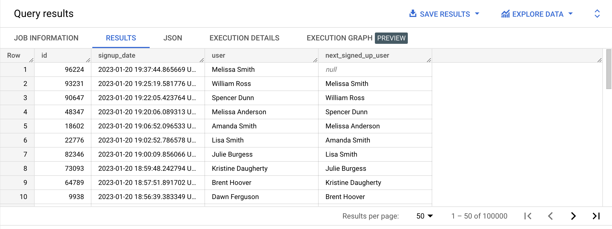
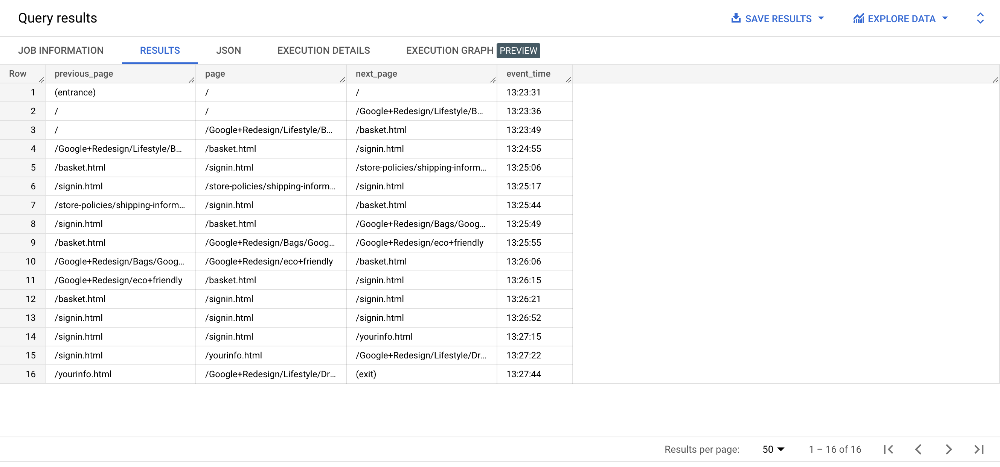

LEAD allows us to display values from subsequent rows. It takes up to 3 parameters:
SELECT id,
created_at AS signup_date,
CONCAT(first_name, ' ', last_name) AS user,
LEAD(CONCAT(first_name, ' ', last_name)) OVER(ORDER BY created_at ASC) AS next_signed_up_user
FROM bigquery-public-data.thelook_ecommerce.users
ORDER BY signup_date DESC;

👉 Check out the official documentation
{% include practice_problems_intructions.html %}bigquery-public-data.ga4_obfuscated_sample_ecommerce.events_20210104
Write a query that will display a path exploration for a unique Google Analytics 4 session defined by user_pseudo_id '1065673.0722289663’ and the session id 8521814404, for January 4th, 2021.
Notes:

WITH page_views AS
( SELECT user_pseudo_id,
( SELECT value.int_value FROM UNNEST(event_params) WHERE event_name = 'page_view' AND key = 'ga_session_id' ) AS session_id,
( SELECT value.string_value FROM UNNEST(event_params) WHERE event_name = 'page_view' AND key = 'page_location' ) AS page,
event_timestamp
FROM bigquery-public-data.ga4_obfuscated_sample_ecommerce.events_20210104
WHERE event_name = 'page_view'
),
pathing AS
( SELECT LAG(page) OVER (PARTITION BY CONCAT(user_pseudo_id, '.', session_id) ORDER BY event_timestamp ASC) AS previous_page,
page,
LEAD(page) OVER (PARTITION BY CONCAT(user_pseudo_id, '.', session_id) ORDER BY event_timestamp ASC) AS next_page,
event_timestamp
FROM page_views
WHERE user_pseudo_id = '1065673.0722289663'
AND session_id = 8521814404
)
SELECT example_dataset.strip_url(previous_page, 'all') AS previous_page,
example_dataset.strip_url(page, 'all') AS page,
example_dataset.strip_url(next_page, 'all') AS next_page,
TIME_TRUNC(CAST(TIMESTAMP_MICROS(event_timestamp) AS TIME), SECOND) AS event_time
FROM pathing
ORDER BY event_time ASC;
bigquery-public-data.ga4_obfuscated_sample_ecommerce.events_*
| avg_delay_in_seconds |
|---|
| 46 |
CREATE TEMP FUNCTION seconds_between(later_number INT64, earlier_number INT64)
RETURNS INTEGER AS
(
TIMESTAMP_DIFF(TIMESTAMP_MICROS(later_number), TIMESTAMP_MICROS(earlier_number), SECOND)
);
WITH page_views AS
( SELECT user_pseudo_id,
( SELECT value.int_value FROM UNNEST(event_params) WHERE event_name = 'page_view' AND key = 'ga_session_id' ) AS session_id,
( SELECT value.string_value FROM UNNEST(event_params) WHERE event_name = 'page_view' AND key = 'page_location' ) AS page,
event_timestamp
FROM `bigquery-public-data.ga4_obfuscated_sample_ecommerce.events_*`
WHERE event_name = 'page_view'
AND _table_suffix BETWEEN '20210101' AND '20210131'
),
pathing AS
( SELECT CONCAT(user_pseudo_id, '.', session_id) AS unique_session_id,
seconds_between(
LEAD(event_timestamp) OVER (PARTITION BY CONCAT(user_pseudo_id, '.', session_id) ORDER BY event_timestamp ASC),
event_timestamp
) AS delay
FROM page_views
ORDER BY unique_session_id, event_timestamp ASC
)
SELECT CAST(AVG(delay) AS INTEGER) AS avg_delay_in_seconds
FROM pathing;
bigquery-public-data.ga4_obfuscated_sample_ecommerce.events_*
Write a query that will display the number of customers who made a valid purchase during a 7-day period in January 2021.
| seven_day_repeat_customers |
|---|
| 43 |
WITH repeat_customers AS
( SELECT user_pseudo_id,
COUNT(*) AS purchase_count
FROM `bigquery-public-data.ga4_obfuscated_sample_ecommerce.events_*`
WHERE _table_suffix BETWEEN '20210101' AND '20210131'
AND example_dataset.is_valid_purchase(ecommerce.transaction_id, ecommerce.purchase_revenue)
GROUP BY user_pseudo_id
HAVING purchase_count > 1
),
all_purchases AS
( SELECT user_pseudo_id,
CAST(TIMESTAMP_MICROS(event_timestamp) AS DATE) AS purchase_date,
ecommerce.transaction_id AS transaction_id,
FROM `bigquery-public-data.ga4_obfuscated_sample_ecommerce.events_*`
WHERE _table_suffix BETWEEN '20210101' AND '20210131'
AND example_dataset.is_valid_purchase(ecommerce.transaction_id, ecommerce.purchase_revenue)
),
repeat_customers_purchases AS
( SELECT r.user_pseudo_id,
purchase_date,
transaction_id
FROM repeat_customers AS r
INNER JOIN all_purchases AS a
ON r.user_pseudo_id = a.user_pseudo_id
),
days_between_repeat_purchases AS
( SELECT user_pseudo_id,
purchase_date,
DATE_DIFF(
LEAD(purchase_date) OVER(PARTITION BY user_pseudo_id ORDER BY purchase_date ASC, transaction_id ASC),
purchase_date,
DAY
) AS days_between
FROM repeat_customers_purchases
)
SELECT COUNT(DISTINCT user_pseudo_id) AS seven_day_repeat_customers
FROM days_between_repeat_purchases
WHERE days_between < 7;